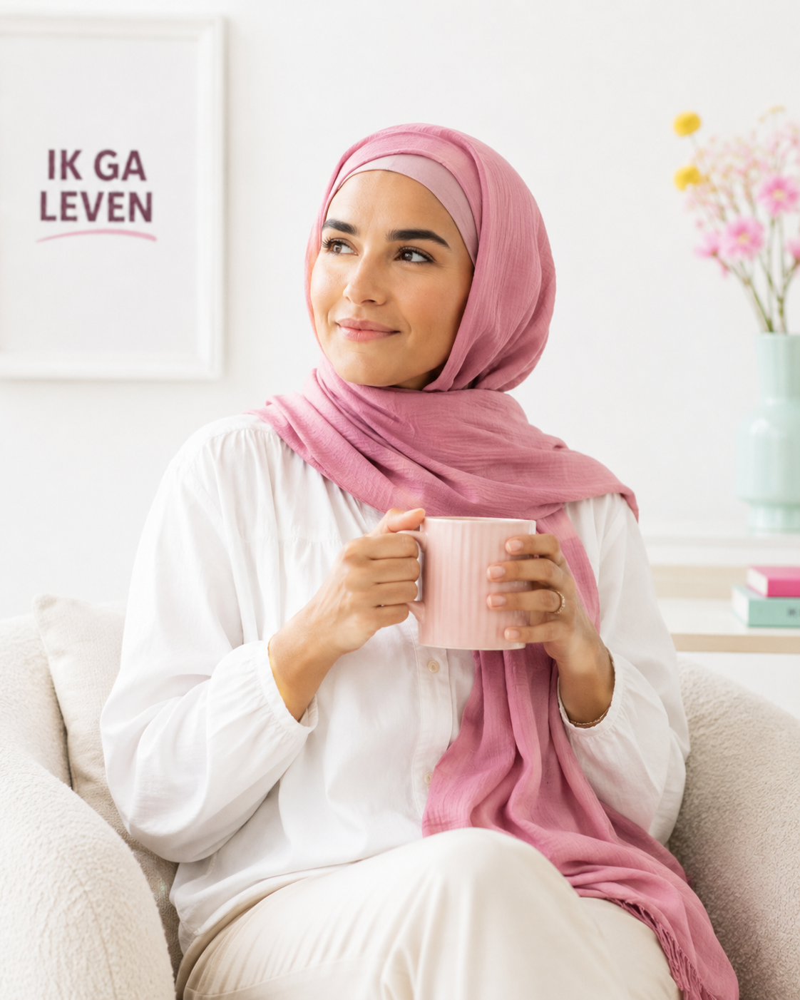
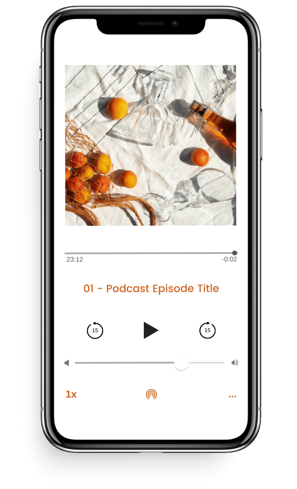

Ik twijfel over geweld in mijn relatie.
Bekijk video →Het begon met liefde
Waarom voelt het nu alsof het niet klopt?
Je voelt dat er iets niet klopt. Je loopt op eieren. Steeds pas je jezelf weer aan om het goed te doen voor hem. Maar het lijkt nooit goed genoeg. Je twijfelt aan jezelf. Je vriendin zegt dat ze je niet meer terugkent. Je voelt je steeds angstiger en slaapt slecht. Je vraagt jezelf soms af waarom je in deze relatie blijft.
Meer informatie over Ik ga leven →Weet je al dat je wilt vertrekken?
Het allerbelangrijkste is dat je een plan maakt om veilig te vertrekken. Het liefst bereid je je vertrek voor en maak je een noodplan voor als de situatie uit de hand loopt. Als het veilig kan, laat dan je e-mailadres achter voor een invulversie.
Wil je wel het veiligheidsplan maken, maar kun je je e-mailadres niet veilig achterlaten? Klik dan hier voor de webversie.
Ik ga leven: herken jij jezelf hierin?
Iedere situatie is anders. Maar de vragen die vrouwen zichzelf stellen, lijken vaak op elkaar.

Ik zit in een relatie met geweld.
Lees verder →Foto: vrouw achter een laptop (nog toe te voegen)
Ik heb geweld in mijn relatie meegemaakt.
Lees meer →Als jij jezelf ook deze vragen stelt, of je herkent in het verhaal van Marijke, Joyce of Ava, dan is Ik ga leven er voor jou.
Doe de check →Zit ik in een relatie met geweld?
Het is bij mij niet zo erg.
Jij denkt bij een vrouw die wordt mishandeld vast aan blauwe ogen en een gebroken arm. Geweld in een relatie kan er heel anders uitzien. Twijfel je over wat er in je relatie aan de hand is? We namen een video voor je op: "Het begon met liefde. Waarom voelt het nu alsof het niet klopt?" (12 minuten)
GratisOnline via Zoom20.000+ vrouwen via Own My Life10 wekenIn jouw tempoVeiligSisterhood zonder oordeel
Over de Ik ga leven cursus
Ontmoet Hiltje, jouw coach
Ik ben Hiltje. Als huisarts en als arts bij Veilig Thuis heb ik veel ervaring met geweld in afhankelijkheidsrelaties, zoals partnergeweld en kindermishandeling. Als coach begeleid ik vrouwen die ingrijpende dingen hebben meegemaakt. En ik ben de initiatiefnemer van de IK GA LEVEN-cursus: een cursus die vrouwen na geweld of misbruik helpt het te begrijpen, de regie terug te nemen en weer geluk en plezier in hun leven te vinden.
- Herken je je in een van hun verhalen?
- Heeft iemand wel eens zorgen over jou en je relatie naar je geuit?
- Heeft je huisarts, maatschappelijk werker of een andere hulpverlener wel eens benoemd dat er in jouw relatie sprake is of was van geweld?
Ik ga leven is een gratis 10-weekse training voor vrouwen die geweld of dwingende controle meemaken of hebben meegemaakt in hun relatie. Of je nu nog in de relatie zit of er net uit bent: je bent welkom.
De training is gebaseerd op de Own My Life Course, een bewezen methode die al aan meer dan 20.000 vrouwen wereldwijd is aangeboden. Je krijgt kennis over wat er werkelijk speelt in jouw relatie en situatie, zodat jíj kunt bepalen wat de volgende stap is.
Wil je weten wat de cursus inhoudt en of die bij jou past?
Meer informatie →
Foto van Hiltje volgt
(vervang dit vlak zodra je een foto aanlevert)
(vervang dit vlak zodra je een foto aanlevert)
Ervaringen
Wat deelnemers vertellen

Van geweld naar geluk
Binnenkort: de podcast Van geweld naar geluk
-
Aflevering 1Titel volgt
-
Aflevering 2Titel volgt
-
Aflevering 3Titel volgt
Zet een eerste stap
Hoe je vandaag kunt beginnen
Laat een anoniem bericht achter
Deel wat er speelt, helemaal anoniem. Je hoeft je naam niet te noemen en niets uit te leggen.
Spreek een bericht in →Bijeenkomst: zit ik in een relatie met psychisch geweld?
Een online bijeenkomst waarin we samen kijken naar wat psychisch geweld en dwingende controle werkelijk zijn.
Meld je aan →Gratis kennismakingsgesprek
Een kort, gratis gesprek. Geen verplichtingen, geen verkooppraatje; samen kijken of dit bij je past.
Plan een gesprek →Signature programma · start begin september 2026
Vind jezelf terug.
Ben je uit een relatie met geweld, of weet je dat je weg wilt maar weet je niet hoe? Ik ga leven geeft je in 10 weken inzichten over dwingende controle, traumabinding en isolatie als tactiek. Zodat je begrijpt wat er werkelijk aan de hand is en zelf kunt bepalen wat de volgende stap is.
Jij bepaalt het tempo
Er is geen verwachting dat je nu al weet wat je wilt. De training geeft je tools. Wat je ermee doet, is aan jou.
Sisterhood
Je volgt de training met vrouwen die begrijpen wat jij doormaakt, zonder dat je alles hoeft uit te leggen. Zonder oordeel.
De volgende ronde start begin september 2026.
Meer informatie →Als het veilig is